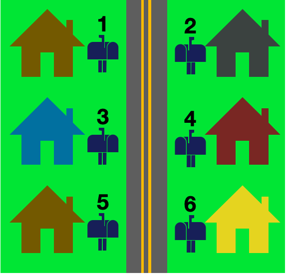
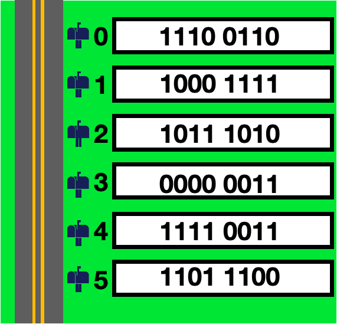

Gameboy Memory and Motherboard Hardware
Gameboys are simple, specialized computers. They read data from memory and follow any
instructions they find there. All memory is stored at specific locations in the hardware.The concept of computer memory and addressing can be confusing to those unfamiliar with it - but it's actually not very complicated.
In gameboys, the smallest address is 0 and the largest address is 65535. These numbers seem weird, but that's because we're used to decimal (base 10) digits. In hexadecimal these addresses are 0x0000 and 0xFFFF (the 0x prefix lets us know these are hexidecimal valus).
That addressing system is nicely paired with some assembly programming we will discuss in detail later. But it's cool enough to be worth quickly summarizing here.
Typically there are between 16 and 64 registers, but more specialized machines may have different amounts customized to their needs. A lower powered or smaller chip might have only a few, and a big powerhouse computer may contain more.
On the gameboy, we have only 8 registers! That's so few!
Each of those registers contain 8 bits. So for example, these might be some values stored in our registers (the equivalent hexidecimal value is included after the binary number in parenthesis):
A: 0001 1010 (0x1A)
B: 0001 0010 (0x12)
C: 0001 0000 (0x16)
D: 1011 0010 (0xB2)
E: 1001 1010 (0x9A)
H: 0101 1110 (0x5E)
L: 1111 0010 (0xF2)
The gameboy includes a neat feature, where you can 'glue' two registers together to contain twice as much data. Let's glue some of the values from above to see what they look like:
AB: 0001 1010 0001 1010 (0x1A12)
CD: 0001 0000 1011 0010 (0x16B2)
HL: 0101 1110 1111 0010 (0x5EF2)
Memory and Addressing
We're all familiar with street addresses. Along any road, houses are numbered - starting with 1 and increasing until the last house on the road. In computers, there are places where binary data can be stored. Each of those places are given an address, going from 0 and increasing until the last place in memory.


In gameboys, the smallest address is 0 and the largest address is 65535. These numbers seem weird, but that's because we're used to decimal (base 10) digits. In hexadecimal these addresses are 0x0000 and 0xFFFF (the 0x prefix lets us know these are hexidecimal valus).
That addressing system is nicely paired with some assembly programming we will discuss in detail later. But it's cool enough to be worth quickly summarizing here.
Assembly and Memory
Inside of every chip there are places to store small amounts of electricty which stand for zeroes and ones. There aren't a lot of them - real estate comes at a premium on chips. These storage units are called "Registers". Generally speaking, any math you do on a computer's ALU will be with registers. (Sometimes you use a value called an "immediate" which means raw data. In higher level languages, this is the difference between performing an operation with a number or a variable.)Typically there are between 16 and 64 registers, but more specialized machines may have different amounts customized to their needs. A lower powered or smaller chip might have only a few, and a big powerhouse computer may contain more.
On the gameboy, we have only 8 registers! That's so few!
Registers: A, F, B, C, D, E, H, L
Each of those registers contain 8 bits. So for example, these might be some values stored in our registers (the equivalent hexidecimal value is included after the binary number in parenthesis):
A: 0001 1010 (0x1A)
B: 0001 0010 (0x12)
C: 0001 0000 (0x16)
D: 1011 0010 (0xB2)
E: 1001 1010 (0x9A)
H: 0101 1110 (0x5E)
L: 1111 0010 (0xF2)
The gameboy includes a neat feature, where you can 'glue' two registers together to contain twice as much data. Let's glue some of the values from above to see what they look like:
AB: 0001 1010 0001 1010 (0x1A12)
CD: 0001 0000 1011 0010 (0x16B2)
HL: 0101 1110 1111 0010 (0x5EF2)
You may notice that our double registers contain 4 hexidecimal values. This is the cool part: We can represent any point in the 0x0000->0xFFFF memory space with a two-part register! (The sizes of registers typically have a relationship to memory size, but this double grouping allows us to squeeze 16-bit memory out of an 8 bit system!)
Memory locations in hardware
So, what do these memory locations actually mean? Well, as we spoke about earlier, the gameboy will automatically read and use different parts of memory for different things. The bits for example between 0xFE00 and 0xFE9F decide what sprites are on screen, where they are, and what color they are (this is called the OAM or object attribute memory).The cool thing about working with hardware is the direct relationship between these memory locations and actual physical things on an electronics board. (More advanced computers have operating systems that use things like 'virtual memory' to hide where data is >:( ... Not so with the Game Boy!)
So let's take a look inside the Game Boy. There's a bunch of stuff packed inside of that little box, but the part we are interested in is the 'motherboard' - the critical chips and doodads that make things happen. It's underneath the screen above the battery compartment.
Let's take a look at the front and back:


Just with our eyeballs we can see the springs which hold in the batteries, the slider bars for volume and contrast, the power button on top, and the AC power supply port on the bottom. We can also see the chips on the front picture, and a line of little wires legs on the back - those wire legs are called 'pins', and those pins are where the game cartridge plugs in!
Pins are what carry the electricity which contain zeroes and ones. Each individual pin will have either a high or a low value sent across to indicate a binary digit.This is an example of how a binary number might be sent to a CPU using pins:

So now we see the Game Boy hardware, we know that we have the memory addressess from 0x000-0xFFFF which live somewhere, and we know memory can be sent along wires and into pins.
Let's also take a second and identify the main 3 chips of interest on the board:
System on a Chip (SoC): The main CPU, the place where calcuations happen.
Working Random Access Memory (WRAM): Speeds up and supports calculations.
Video Random Access Memory (VRAM): Where information about what is displayed on screen is stored.
So let's take a look at this labeled image of the motherboard, where the chips are identified, and the points in memory matched to them:

In our next sections, we will discuss how to read and write to these different points in memory in order to make a game actually DO STUFF on screen.
<- Back to GameBoy Tutorials